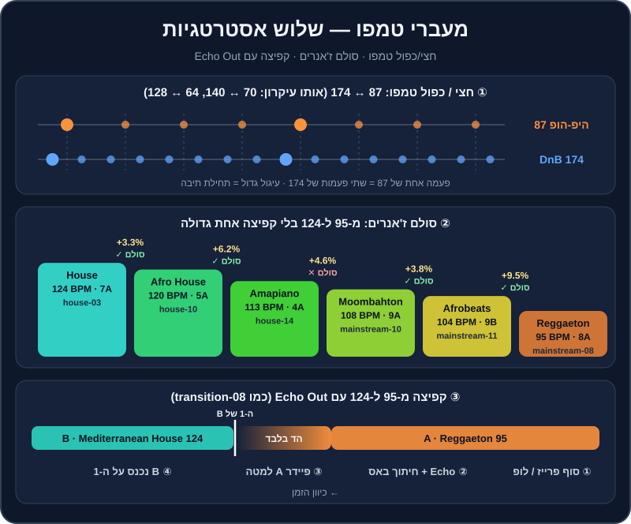

פרק 15 מתוך 20
מעברי טמפו וז'אנר
Tempo & Genre Switching
איך עוברים מרגאטון ב-95 להאוס ב-124 (ובחזרה) בלי שהרחבה תרגיש 'בור': החשבון של אחוזי טמפו, Echo Out וקאט, חצי/כפול טמפו, רמפה הדרגתית, סולם ז'אנרים, ושימוש ב-transition-08 וב-practice-15.
אתם באמצע סבב שני בחתונה. בלוק רגאטון עובד מעולה — הרחבה מלאה, ב-95 BPM. עכשיו אתם רוצים להעלות הילוך: האוס ים-תיכוני ב-124. אם תנסו "לבטמאץ'" — תצטרכו להאיץ את הרגאטון ב-30%, והזמר יישמע כמו סנאי. אם פשוט תעצרו ותתחילו שיר חדש — יהיה "בור" של שנייה, והרחבה תתפזר.
יש דרכים טובות יותר. בפרק הזה נלמד את ארגז הכלים המלא של מעברי טמפו וז'אנר: מתי מספיק להזיז את הפיידר, מתי קופצים, ואיך בונים "סולם" של ז'אנרים שמעלה את הטמפו בלי שאף אחד ירגיש.
מה תלמדו בפרק#
- לחשב אחוזי שינוי טמפו, ולדעת מה "מורגש" ומה לא.
- חמש אסטרטגיות: רמפה הדרגתית, Echo Out וקאט, חצי/כפול טמפו, סולם ז'אנרים, ושבירת אקפלה ותופים.
- זוגות ז'אנרים נפוצים: היפ-הופ/רגאטון/ים-תיכוני ↔ האוס, טראפ ↔ דאבסטפ, טכנו ↔ הארד טכנו.
- לנתח ולשחזר את
transition-08, ולתרגל עםpractice-15.

החשבון: כמה זה "הרבה"?#
אחוז השינוי = (BPM חדש ÷ BPM נוכחי − 1) × 100. מ-124 ל-128: 128 ÷ 124 = 1.032, כלומר +3.2%.
| מ- | אל | שינוי | מה עושים |
|---|---|---|---|
| 120 | 124 | +3.3% | בלנד רגיל — אף אחד לא ישמע |
| 124 | 128 | +3.2% | בלנד רגיל, או רמפה לאורך טראק |
| 95 | 100 | +5.3% | בלנד קצר; בווקאל כבר מורגש |
| 113 | 120 | +6.2% | גבולי — עדיף Echo Out או בלנד קצר מאוד |
| 100 | 108 | +8% | קפיצה (Echo Out / קאט) |
| 104 | 124 | +19% | קפיצה |
| 95 | 124 | +30.5% | קפיצה — או סולם ז'אנרים |
| 87 | 174 | פי 2 | חצי/כפול טמפו — אותו גריד! |
כלל אצבע (עם MASTER TEMPO דולק):
- עד 3% — בלתי מורגש כמעט בכל ז'אנר.
- 3%-6% — מורגש על ווקאל וכלים "טבעיים" (פסנתר, גיטרה). בטראקי תופים ובאס — בסדר.
- מעל 6%-8% — מתחילים לשמוע "שאריות" דיגיטליות, וה"אופי" של השיר משתנה. כאן כבר לא מזיזים — קופצים.
אסטרטגיה 1: רמפה — "לרכוב" על הטמפו#
השינוי הכי חלק הוא זה שאף אחד לא שם לב אליו. במקום לקפוץ מ-124 ל-130, מעלים את הטמפו של המאסטר בהדרגה, לאורך כמה טראקים.
- ודאו ש-
MASTER TEMPOדולק בשני הדקים. - בזמן שטראק מתנגן לבד (אחרי מעבר), הזיזו את הטמפו שלו בכחצי BPM כל 16 תיבות.
- כשהגעתם ליעד, הכניסו את הטראק הבא, מותאם לטמפו החדש.
- חזרו על זה לאורך 2-3 טראקים.
סוד המקצוענים — רמפה בברייקדאון: כשאין תופים (בברייקדאון, Hot Cue C בטראקים שלנו), אין לאוזן "עוגן" קצבי. אפשר להעלות שם 2-3% בתוך 8 תיבות, והדרופ חוזר בטמפו החדש — בלי שאיש ירגיש.
אסטרטגיה 2: Echo Out וקאט — הקפיצה#
כשהפער גדול מדי לרמפה, קופצים. הקפיצה הטובה מרגישה מתוכננת: היא קורית בסוף משפט מוזיקלי, עם "זנב" שמחבר בין העולמות, והטראק החדש נוחת על ה-1 עם אנרגיה.
הקפיצה צעד אחר צעד (מ-95 ל-124)#
- הכינו את B. טענו את הטראק החדש, וסמנו Hot Cue בנקודה שבה הוא צריך להיכנס. בקפיצה למעלה — לרוב הדרופ (D) או תחילת הגרוב (B), לא אינטרו של 32 תיבות תופים.
- בחרו את רגע היציאה מ-A: סוף פזמון, סוף משפט ווקאלי, או סוף פרייז של 8/16 תיבות.
- בפעמה האחרונה של המשפט — הדליקו
Echoשל 1/2 או פעמה אחת, Level בסביבות 50%. אפשר להוסיף גם חיתוך Low ב-EQ. - על ה-1 הבא — הורידו את הפיידר של A. ההד ממשיך לבד.
- על אותו 1 (או פעמה-שתיים אחרי) — הפעילו את B מה-Hot Cue. הוא נכנס בטמפו המקורי שלו, 124, בלי שום ביטמאצ'ינג.
- כבו את ה-Echo והחזירו Level לאפס.
וריאציות:
- קאט "יבש" — בלי Echo, B על ה-1 מיד אחרי ש-A נגמר. דורש תזמון מושלם, ועובד מצוין בהיפ-הופ ורגאטון.
- בלימה (Vinyl Brake / Backspin) — A "נעצר", ו-B מתפוצץ. דרמטי — פעם-פעמיים בערב.
- אפקט מעבר — ריזר, נויז או סאונד אפקט קצר שמחבר. לא להגזים.
- שקט מכוון — חצי פעמה של שקט מוחלט לפני דרופ עוצמתי. רק כשאתם בטוחים בתזמון.
ניתוח: transition-08#
הדמו transition-08 (בתיקייה music/transitions/) הוא בדיוק המעבר הזה: מ-mainstream-08 (Dembow Fuego, רגאטון, 95 BPM, 8A) אל mainstream-15 (Mediterranean Sunrise, האוס ים-תיכוני, 124 BPM, 7A). שימו לב לשלושה דברים כשאתם מאזינים:
- איפה A יוצא — בסוף משפט, לא באמצע.
- האורך של זנב ה-Echo — מספיק כדי לגשר, לא כל כך ארוך שהוא "מלכלך" את ההתחלה של B.
- הסולמות — 8A ו-7A שכנים בגלגל, כך שגם הזנב של ההד לא מתנגש עם B.
אסטרטגיה 3: חצי טמפו וכפול טמפו#
64 = חצי מ-128. 70 = חצי מ-140. 87 = חצי מ-174. כשמספר אחד הוא בדיוק פי 2 מהשני, הגרידים מתיישרים: כל פעמה של הטראק האיטי = שתי פעמות של המהיר. לכן אפשר לערבב אותם כמו שני טראקים באותו טמפו.
הזוגות הנפוצים:
| איטי | מהיר | ז'אנרים | מהרפו |
|---|---|---|---|
| 87 | 174 | היפ-הופ ↔ דראם אנד בייס | breadth-10 (84, להעלות ל-86) ↔ breadth-06 (172) |
| 70 | 140 | "תחושה" של טראפ/דאבסטפ ↔ פסיכדלי, הארד | mainstream-06 (140) ↔ breadth-07 (140) |
| 64 | 128 | היפ-הופ איטי / R&B ↔ האוס וטכנו | — |
- ודאו שה-BPM של שני הטראקים מוצג נכון (לפעמים התוכנה מזהה טראפ ב-70 ולפעמים ב-140).
- התאימו את האיטי בדיוק לחצי מהמהיר (למשל 86 מול 172).
- ישרו את ה-1 של שניהם — ה-1 של האיטי חייב ליפול על ה-1 של המהיר.
- מכאן — מעבר רגיל: Bass Swap, פילטר, או קאט.
אסטרטגיה 4: סולם ז'אנרים#
במקום קפיצה אחת של 30%, עולים במדרגות. כל מדרגה היא ז'אנר שנמצא "בין" הקודם לבא:
| מדרגה | ז'אנר | BPM | אצלנו | שינוי מהקודם | מהלך בגלגל |
|---|---|---|---|---|---|
| 1 | Reggaeton | 95 | mainstream-08 (8A) |
— | — |
| 2 | Afrobeats | 104 | mainstream-11 (9B) |
+9.5% | 8A→9B (אלכסון) |
| 3 | Moombahton | 108 | mainstream-10 (9A) |
+3.8% | 9B→9A ✓ |
| 4 | Amapiano | 113 | house-14 (4A) |
+4.6% | 9A→4A ✕ |
| 5 | Afro House | 120 | house-10 (5A) |
+6.2% | 4A→5A ✓ |
| 6 | House | 124 | house-03 (7A) |
+3.3% | 5A→7A (+2) |
איך עוברים כל מדרגה:
- פחות מ-4% — בלנד רגיל.
- 4%-6% — "נפגשים באמצע": מעבר מ-108 ל-113? שימו את שניהם על 110.5 במהלך המעבר (+2.3% ו-−2.2%), ואחרי המעבר "רכבו" עם החדש חזרה ל-113.
- מעל 6% — Echo Out או קאט, אבל קצר ומדויק. בין רגאטון לאפרוביטס האוזן כבר מצפה לשינוי.
- מדרגה עם ✕ בגלגל — חפיפה של תופים בלבד, או קאט. לא בלנד ארוך עם שני באסים.
אסטרטגיה 5: שבירה של אקפלה ותופים#
הרבה שירים מסתיימים (או אפשר לגרום להם להסתיים) בקטע של תופים בלבד, או בשירה כמעט בלי ביט. בקטע כזה "הקצב" פחות מוחשי — וזה חלון להחליף טמפו.
- מצאו בטראק A קטע של תופים בלבד או ווקאל חופשי (באאוטרו, או בברייקדאון).
- הפעילו לופ של 1-2 תיבות על הקטע הזה.
- אופציה א' (קלה): Echo Out מהלופ, ו-B נכנס על ה-1 בטמפו שלו.
- אופציה ב' (מתקדמת): על לופ של תופים בלבד, העלו את הטמפו בהדרגה לאורך 8-16 תיבות — למשל מ-100 ל-110. על תופים, האוזן מקבלת האצה כ"בילד-אפ". ואז קאט ל-B ב-124.
מעברי ז'אנר נפוצים — מתכונים#
היפ-הופ / רגאטון / ים-תיכוני ← האוס (עלייה)#
- הכלי העיקרי: Echo Out + כניסה של האוס מה-Hot Cue B או D, לא מאינטרו של תופים בלבד (16 תיבות של קיק אחרי שיר רגאטון — הרחבה "מתקררת").
- טריק: הכניסו את התופים של טראק ההאוס מתחת לאקפלה או לסוף הפזמון של השיר הקודם — הקיק של ההאוס "מאיץ" את התחושה.
- ים-תיכוני ← רמיקס ים-תיכוני: פזמון של שיר ב-100, Echo Out, ורמיקס האוס עם אותו צבע מזרחי.
mainstream-14(Hijaz Fire, 104, 8A) →mainstream-15(124, 7A) — שכנים בגלגל, אז גם זנב ההד מתאים.
האוס ← היפ-הופ / רגאטון (ירידה)#
- הבעיה: ירידה מ-124 ל-95 מרגישה כמו "בלם יד".
- הפתרון: סיימו את ההאוס בשיא (לא בברייקדאון), Echo Out קצר או
Vinyl Brake, וכניסה מהפזמון של הלהיט הכי גדול שלכם ב-95. האנרגיה של השיר המוכר "מחפה" על הירידה בטמפו. - מהרפו:
house-05(126) →mainstream-07(95): Echo Out, ו-mainstream-07 מ-Hot Cue D.
טראפ ← דאבסטפ ← פסיכדלי / הארד#
- טראפ ↔ דאבסטפ: אותו 140, ולפעמים אותו סולם (
mainstream-06ו-breadth-07 — שניהם 4A!). בלנד או החלפת דרופים. - דאבסטפ ← פסיכדלי (138-142): הקיק משתנה מחצי-טמפו לארבע על הרצפה — האנרגיה מוכפלת. קאט על הדרופ.
טכנו ← הארד טכנו#
- מ-130 ל-150 זה +15%. רמפה של 2-3% לכל טראק, או רמפה בברייקדאון ואז קפיצה של Echo Out (ראו את התרגול של
techno-03→techno-12בפרק 13).
מלודיק טכנו (122-124) ↔ טק האוס (126-128)#
- פער קטן (+3%) — רמפה רגילה. הקושי הוא באופי: מלודיק "רגשי", טק האוס "קופצני". גשר טוב: טראק טק האוס עם קצת אקורדים, או מלודיק עם באסליין קצבי. בסט של פרק 12:
house-05→techno-01עובד כי שניהם ב-8A.
דראם אנד בייס ↔ היפ-הופ#
- חצי/כפול טמפו — 87 ↔ 174. אקפלה של היפ-הופ מעל DnB היא קלאסיקה של סטים בריטיים.
תרחיש מלא: 25 דקות של "סבב שני" בחתונה#
כך נראה בלוק אמיתי שמשתמש בכל האסטרטגיות של הפרק — מרגאטון, דרך "סולם" אפרו, להאוס ים-תיכוני ול-EDM, ובחזרה למטה. כל טראק מתנגן 2-3 דקות, כמו ב-Open Format.
| # | טראק | BPM | Camelot | איך נכנסים | למה |
|---|---|---|---|---|---|
| 1 | mainstream-09 Perreo Nocturno |
92 | 7A | פתיחת הבלוק, מה-Hot Cue של הגרוב | רגאטון מוכר מחמם את הצעירים |
| 2 | mainstream-08 Dembow Fuego |
95 | 8A | בלנד קצר של 8 תיבות (+3.3%) | +1 בגלגל, אותו עולם |
| 3 | mainstream-11 Lagos To Haifa |
104 | 9B | Echo Out של 1/2 וכניסה על ה-1 (+9.5%) | מדרגה ראשונה בסולם הז'אנרים |
| 4 | mainstream-10 Moombah Heat |
108 | 9A | "נפגשים באמצע" על 106, ואז "רכיבה" ל-108 | A↔B בגלגל — חלק |
| 5 | house-14 Log Drum Lagoon |
113 | 4A | קאט על ה-1 (הסולם לא תואם) | הלוג-דראם מעלה את הגרוב |
| 6 | house-10 Kalimba Moon |
120 | 5A | Echo Out קצר, כניסה מ-B (+6.2%) | פרקשן אפרו מחבר |
| 7 | mainstream-15 Mediterranean Sunrise |
124 | 7A | בלנד של 16 תיבות (+3.3%), +2 בגלגל | הרגע שהקהל הישראלי מזהה את הצבע |
| 8 | mainstream-16 Oud Club |
125 | 6A | החלפת דרופים | שיא ים-תיכוני |
| 9 | mainstream-02 Hands In The Sky |
128 | 6A | רמפה ל-128 בברייקדאון של הקודם, ואז מיקס בבילד-אפ | אותו סולם — עוברים ל-EDM |
| 10 | mainstream-01 Festival Main Stage |
128 | 4A | קאט על הדרופ (−2 בגלגל, רק בקפיצה) | השיא של הבלוק |
| 11 | mainstream-07 Late Night Cypher |
95 | 6A | Vinyl Brake או Echo Out, וכניסה מההוק |
ירידה בטמפו — רק עם גרוב חזק |
טעויות נפוצות#
| טעות | למה זה קורה | התיקון |
|---|---|---|
| מאיצים שיר ווקאלי ב-10% | "חייב ביטמאץ'" | Echo Out וקפיצה |
| נכנסים לטמפו החדש מאינטרו ארוך של תופים | "ככה עושים בקלאב" | באירוע — נכנסים מהגרוב או מהדרופ |
| יורדים בטמפו לשיר לא מוכר | לא תכננו | ירידה = רק עם להיט |
| Echo של 4 פעמות על שיר מהיר | הזנב ארוך מדי | 1/2 או 1 |
| שוכחים את טווח הפיידר | הפיידר "נתקע" ב-+6% | ±16% לרמפות |
| מחליפים ז'אנר בכל שיר | התלהבות | בלוקים של 10-20 דקות |
תרגילים#
סיכום#
- עד 3% — בלנד. 3%-6% — בזהירות. מעל 6%-8% — קופצים.
- הקפיצה הטובה: סוף משפט, Echo Out של 1/2 או פעמה, והטראק החדש על ה-1 — מהדרופ או מהגרוב.
- חצי/כפול טמפו (87/174, 70/140, 64/128) מאפשר לערבב עולמות "רחוקים" כאילו הם באותו טמפו.
- סולם ז'אנרים: רגאטון ← אפרוביטס ← מומבהטון ← אמאפיאנו ← אפרו ← האוס.
- ירידה בטמפו — רק עם להיט, ישר מהפזמון.
- הקבצים
transition-08ו-practice-15נבנו בשביל הפרק הזה — השתמשו בהם.
אחרי שאתם יודעים לחבר כל דבר לכל דבר — הגיע הזמן להקליט את זה ולשתף עם העולם. ← פרק 16: הקלטה ושיתוף